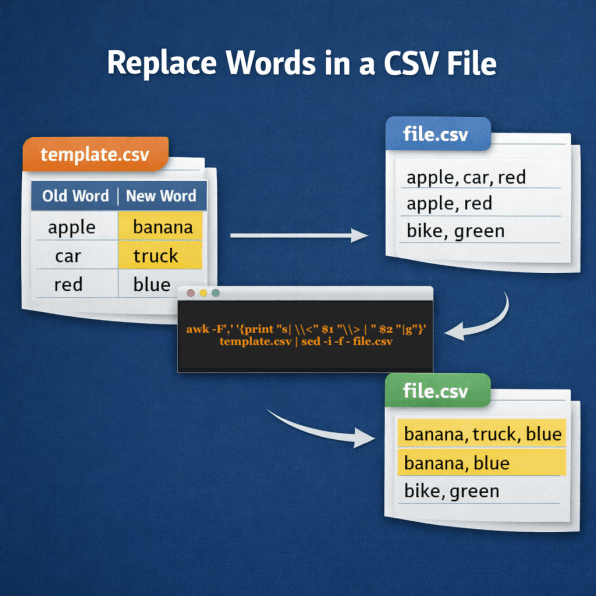
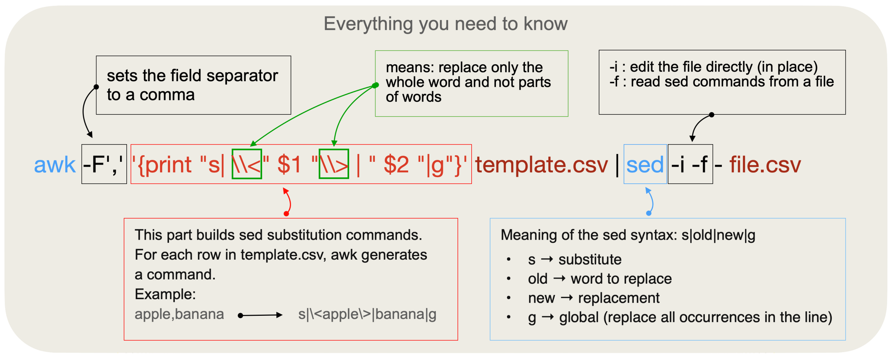

AI Website Maker
template.csv : CSV file containing the substitution table.
file.csv : CSV file to be modified.
Ready to use (Linux version)
awk -F',' '{print "s|\\<" $1 "\\>|" $2 "|g"}' template.csv | sed -i -f - file.csv

AI Website Maker